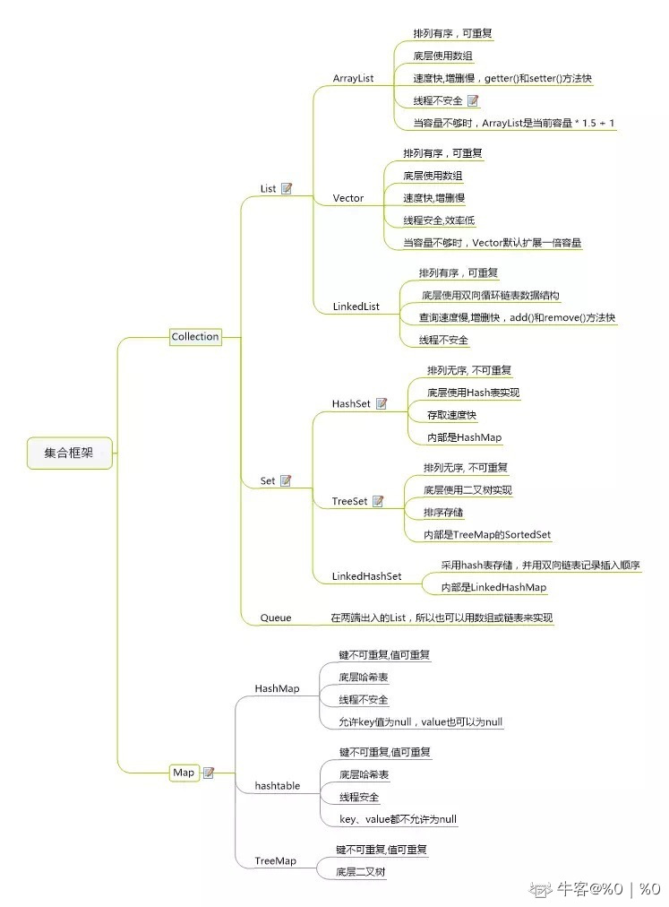
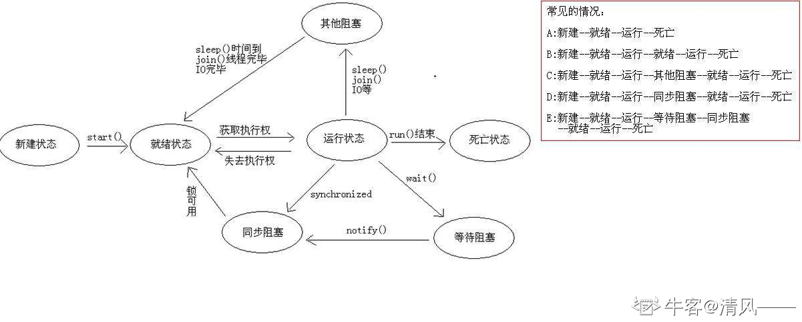

牛客网java面经
JavaSE
请你讲讲数组(Array)和列表(ArrayList)的区别？什么时候应该使用Array而不是ArrayList？
Array和ArrayList的不同点：
- Array可以包含基本类型和对象类型，ArrayList只能包含对象类型。
- Array大小是固定的，ArrayList的大小是动态变化的。
- ArrayList提供了更多的方法和特性，比如：addAll()，removeAll()，iterator()等等。
- 对于基本类型数据，ArrayList使用自动装箱来减少编码工作量。但是，当处理固定大小的基本数据类型的时候，这种方式相对比较慢。
请你解释为什么会出现4.0-3.6=0.40000001这种现象？
浮点数值采用二进制系统表示， 而在二进制系统中无法精确地表示分数 1/10。
这就好像十进制无法精确地表示分数 1/3—样。
如果在数值计算中不允许有任何舍入误差， 就应该使用 BigDecimal类。
例如：
0.5能够表示，因为它可以表示成为1/2
0.75也能够表示，因为它可以表示成为1/2+1/(2^2)
0.875也能够表示，因为它可以表示成为1/2+1/(2^2)+1/(2^3)
0.9375也能够表示，因为它可以表示成为1/2+1/(2^2)+1/(2^3)+1/(2^4)
但是0.1不能够精确表示，因为它不能表示成为1/(2^n)的和的形式
任意十进制整数都能转换为有限位的二进制数，但十进制小数不一定可以。
BigDecimal原理：
- 把十进制小数扩大n倍，转成整数后再进行运算
请你讲讲一个十进制的数在内存中是怎么存的？
以二进制补码形式存储，最高位是符号位(正数0，负数1)，正数的补码是它的原码，负数的补码是它的反码加1，在求反码时符号位不变，符号位为1，其他位取反
请你说说Lamda表达式的优缺点
优点：1. 简洁。2. 非常容易并行计算。3. 可能代表未来的编程趋势。
缺点：1. 若不用并行计算，很多时候计算速度没有比传统的 for 循环快。（并行计算有时需要预热才显示出效率优势）2. 不容易调试。3. 若其他程序员没有学过 lambda 表达式，代码不容易让其他语言的程序员看懂。
lambda表达式的并行计算是底层框架ForkJoin决定的
你知道java8的新特性吗，请简单介绍一下
- Lambda 表达式 − Lambda允许把函数作为一个方法的参数（函数作为参数传递进方法中。
- 方法引用− 方法引用提供了非常有用的语法，可以直接引用已有Java类或对象（实例）的方法或构造器。与lambda联合使用，方法引用可以使语言的构造更紧凑简洁，减少冗余代码。
- 默认方法− 默认方法就是一个在接口里面有了一个实现的方法。
- 新工具− 新的编译工具，如：Nashorn引擎 jjs、 类依赖分析器jdeps。
- Stream API −新添加的Stream API（java.util.stream） 把真正的函数式编程风格引入到Java中。
- Date Time API − 加强对日期与时间的处理。
- Optional 类 − Optional 类已经成为 Java 8 类库的一部分，用来解决空指针异常。
- Nashorn, JavaScript 引擎 − Java 8提供了一个新的Nashorn javascript引擎，它允许我们在JVM上运行特定的javascript应用。
请你解释Object若不重写hashCode()的话，hashCode()如何计算出来的？
Object 的 hashcode 方法是本地方法，也就是用 c 语言或 c++ 实现的，该方法直接返回对象的 内存地址
请你解释为什么重写equals还要重写hashcode？
hashCode 方法用于散列集合的查找，equals 方法用于判断两个对象是否相等。HashMap中，如果要比较key是否相等，要同时使用这两个函数！因为自定义的类的hashcode()方法继承于Object类，其hashcode码为默认的内存地址，这样即便有相同含义的两个对象，比较也是不相等的。
对于HashSet也是同理,如果只重写了equals 方法，两个对象equals 返回了true，但是如果没有重写hashCode 方法，集合还是会插入元素。 这样集合中就出现了重复元素了。
请你介绍一下map的分类和常见的情况
java为数据结构中的映射定义了一个接口java.util.Map;它有四个实现类,分别是HashMap Hashtable LinkedHashMap 和TreeMap.
Map主要用于存储健值对，根据键得到值，因此不允许键重复(重复了覆盖了),但允许值重复。
Hashmap 是一个最常用的Map,它根据键的HashCode值存储数据,根据键可以直接获取它的值，具有很快的访问速度，遍历时，取得数据的顺序是完全随机的。 HashMap最多只允许一条记录的键为Null;允许多条记录的值为 Null;HashMap不支持线程的同步，即任一时刻可以有多个线程同时写HashMap;可能会导致数据的不一致。如果需要同步，可以用 Collections的synchronizedMap方法使HashMap具有同步的能力，或者使用ConcurrentHashMap。
Hashtable与 HashMap类似,它继承自Dictionary类，不同的是:它不允许记录的键或者值为空;它支持线程的同步，即任一时刻只有一个线程能写Hashtable,因此也导致了 Hashtable在写入时会比较慢。
LinkedHashMap 是HashMap的一个子类，保存了记录的插入顺序，在用Iterator遍历LinkedHashMap时，先得到的记录肯定是先插入的.也可以在构造时用带参数，按照应用次数排序。在遍历的时候会比HashMap慢，不过有种情况例外，当HashMap容量很大，实际数据较少时，遍历起来可能会比 LinkedHashMap慢，因为LinkedHashMap的遍历速度只和实际数据有关，和容量无关，而HashMap的遍历速度和他的容量有关。
TreeMap实现SortMap接口，能够把它保存的记录根据键排序,默认是按键值的升序排序，也可以指定排序的比较器，当用Iterator 遍历TreeMap时，得到的记录是排过序的。
一般情况下，我们用的最多的是HashMap,在Map 中插入、删除和定位元素，HashMap 是最好的选择。但如果您要按自然顺序或自定义顺序遍历键，那么TreeMap会更好。如果需要输出的顺序和输入的相同,那么用LinkedHashMap 可以实现,它还可以按读取顺序来排列.
- HashMap是一个最常用的Map，它根据键的hashCode值存储数据，根据键可以直接获取它的值，具有很快的访问速度。HashMap最多只允许一条记录的键为NULL，允许多条记录的值为NULL。
- HashMap不支持线程同步，即任一时刻可以有多个线程同时写HashMap，可能会导致数据的不一致性。如果需要同步，可以用Collections的synchronizedMap方法使HashMap具有同步的能力。
- Hashtable与HashMap类似，不同的是：它不允许记录的键或者值为空；它支持线程的同步，即任一时刻只有一个线程能写Hashtable，因此也导致了Hashtable在写入时会比较慢。
- LinkedHashMap保存了记录的插入顺序，在用Iterator遍历LinkedHashMap时，先得到的记录肯定是先插入的。
- TreeMap能够把它保存的记录根据键排序，在遍历的时候会比HashMap慢，默认是按升序排序，也可以指定排序的比较器。当用Iterator遍历TreeMap时，得到的记录是排过序的。
请你讲讲Java里面的final关键字是怎么用的？
当用final修饰一个类时，表明这个类不能被继承。final类中的成员变量可以根据需要设为final，但是要注意final类中的所有成员方法都会被隐式地指定为final方法。
final修饰方法，表示方法不能被重写。
final修饰变量，如果是基本数据类型的变量，则其数值一旦在初始化之后便不能更改；如果是引用类型的变量，则在对其初始化之后便不能再让其指向另一个对象。
请你谈谈关于Synchronized和lock
- Lock是一个接口，而synchronized是Java中的关键字，synchronized是内置的语言实现；
- ynchronized在发生异常时，会自动释放线程占有的锁，因此不会导致死锁现象发生；而Lock在发生异常时，如果没有主动通过unLock()去释放锁，则很可能造成死锁现象，因此使用Lock时需要在finally块中释放锁；
- Lock可以让等待锁的线程响应中断，而synchronized却不行，使用synchronized时，等待的线程会一直等待下去，不能够响应中断；
- 通过Lock可以知道有没有成功获取锁，而synchronized却无法办到
请你介绍一下volatile？
https://www.cnblogs.com/dolphin0520/p/3920373.html
volatile关键字是用来保证有序性和可见性的。
保证有序性：禁止指令重排序
保证可见性：更新完操作后立刻写入内存，其他线程读取volatile变量的值时也会重新从内存中加载
请你介绍一下Syncronized锁，如果用这个关键字修饰一个静态方法，锁住了什么？如果修饰成员方法，锁住了什么？
synchronized的修饰对象有几种：
- 修饰一个类，其作用的范围是synchronized后面括号括起来的部分， 作用的对象是这个类的所有对象；
- 修饰一个方法，被修饰的方法称为同步方法，其作用的范围是整个方法， 作用的对象是调用这个方法的对象；
- 修改一个静态的方法，其作用的范围是整个静态方法， 作用的对象是这个类的所有对象；
- 修饰一个代码块，被修饰的代码块称为同步语句块，其作用的范围是大括号{}括起来的代码， 作用的对象是调用这个代码块的对象；
若对一个类不重写，它的equals()方法是如何比较的？
比较是对象的地址
请解释hashCode()和equals()方法有什么联系？
Java对象的eqauls方法和hashCode方法是这样规定的：
➀相等（相同）的对象必须具有相等的哈希码（或者散列码）。
➁如果两个对象的hashCode相同，它们并不一定相同。
请解释Java中的概念，什么是构造函数？什么是构造函数重载？什么是复制构造函数？
- 当新对象被创建的时候，构造函数会被调用。每一个类都有构造函数。在程序员没有给类提供构造函数的情况下，Java编译器会为这个类创建一个默认的无参构造函数。
- Java中构造函数重载和方法重载很相似。可以为一个类创建多个构造函数。每一个构造函数必须有它自己唯一的参数列表。
- Java不支持像C++中那样的复制构造函数，这个不同点是因为如果你不自己写构造函数的情况下，Java不会创建默认的复制构造函数。
请说明Query接口的list方法和iterate方法有什么区别？
- list()方法无法利用一级缓存和二级缓存（对缓存只写不读），它只能在开启查询缓存的前提下使用查询缓存；iterate()方法可以充分利用缓存，如果目标数据只读或者读取频繁，使用iterate()方法可以减少性能开销。
- list()方法不会引起N+1查询问题，而iterate()方法可能引起N+1查询问题
请你谈一下面向对象的”六原则一法则”
- 单一职责原则：一个类只做它该做的事情。（单一职责原则想表达的就是”高内聚”）
- 开闭原则：软件实体应当对扩展开放，对修改关闭。（在理想的状态下，当我们需要为一个软件系统增加新功能时，只需要从原来的系统派生出一些新类就可以，不需要修改原来的任何一行代码。要做到开闭有两个要点：
- 抽象是关键，一个系统中如果没有抽象类或接口系统就没有扩展点；
- 封装可变性，将系统中的各种可变因素封装到一个继承结构中，如果多个可变因素混杂在一起，系统将变得复杂而换乱，
- 依赖倒转原则：面向接口编程。（该原则说得直白和具体一些就是声明方法的参数类型、方法的返回类型、变量的引用类型时，尽可能使用抽象类型而不用具体类型，因为抽象类型可以被它的任何一个子类型所替代，请参考下面的里氏替换原则。）
- 里氏替换原则：任何时候都可以用子类型替换掉父类型。（简单的说就是能用父类型的地方就一定能使用子类型。里氏替换原则可以检查继承关系是否合理，如果一个继承关系违背了里氏替换原则，那么这个继承关系一定是错误的，需要对代码进行重构。）
- 接口隔离原则：接口要小而专，绝不能大而全。（臃肿的接口是对接口的污染，既然接口表示能力，那么一个接口只应该描述一种能力，接口也应该是高度内聚的。
- 合成聚合复用原则：优先使用聚合或合成关系复用代码。（通过继承来复用代码是面向对象程序设计中被滥用得最多的东西，因为所有的教科书都无一例外的对继承进行了鼓吹从而误导了初学者，类与类之间简单的说有三种关系，Is-A关系、Has-A关系、Use-A关系，分别代表继承、关联和依赖。其中，关联关系根据其关联的强度又可以进一步划分为关联、聚合和合成，但说白了都是Has-A关系，合成聚合复用原则想表达的是优先考虑Has-A关系而不是Is-A关系复用代码
- 迪米特法则：迪米特法则又叫最少知道原则，一个对象应当对其他对象有尽可能少的了解。
请说明如何通过反射获取和设置对象私有字段的值？
可以通过类对象的getDeclaredField()方法字段（Field）对象，然后再通过字段对象的setAccessible(true)将其设置为可以访问，接下来就可以通过get/set方法来获取/设置字段的值了。
请说明重载（Overload）和重写（Override）的区别。重载的方法能否根据返回类型进行区分？
方法的重载和重写都是实现多态的方式，区别在于前者实现的是编译时的多态性，而后者实现的是运行时的多态性。
重载发生在一个类中，同名的方法如果有不同的参数列表（参数类型不同、参数个数不同或者二者都不同）则视为重载；
重写发生在子类与父类之间，重写要求子类重写方法的返回类型小于等于父类被重写方法，访问权限大于等于父类被重写方法，声明的异常小于等于父类被重写方法（里氏代换原则）。
重载对返回类型没有特殊的要求，但是仅仅只有返回类型不同不算重写，编译器还会报错！
请说明内部类可以引用他包含类的成员吗，如果可以，有没有什么限制吗？
一个内部类对象可以访问创建它的外部类对象的内容
- 内部类如果不是static的，那么它可以访问创建它的外部类对象的所有属性
- 内部类如果是sattic的，即为nested class，那么它只可以访问创建它的外部类对象的所有static属性
一般普通类只有public或package的访问修饰，而内部类可以实现static，protected，private等访问修饰。
当从外部类继承的时候，内部类是不会被覆盖的，它们是完全独立的实体，每个都在自己的命名空间内，如果从内部类中明确地继承，就可以覆盖原来内部类的方法。
请说明JAVA语言如何进行异常处理，关键字：throws,throw,try,catch,finally分别代表什么意义？在try块中可以抛出异常吗？
Java 通过面向对象的方法进行异常处理，把各种不同的异常进行分类，并提供了良好的接口。
在Java中，每个异常都是一个对象，它是Throwable类或其它子类的实例。当一个方法出现异常后便抛出一个异常对象，该对象中包含有异常信息，调用这个对象的方法可以捕获到这个异常并进行处理。Java的异常处理是通过5个关键词来实现的：try、catch、throw、throws和finally。
一般情况下是用try来执行一段程序，如果出现异常，系统会抛出（throws）一个异常，这时候你可以通过它的类型来捕捉（catch）它，或最后（finally）由缺省处理器来处理。
用try来指定一块预防所有”异常”的程序。紧跟在try程序后面，应包含一个catch子句来指定你想要捕捉的”异常”的类型。throw语句用来明确地抛出一个”异常”。throws用来标明一个成员函数可能抛出的各种”异常”。Finally为确保一段代码不管发生什么”异常”都被执行一段代码。
可以在一个成员函数调用的外面写一个try语句，在这个成员函数内部写另一个try语句保护其他代码。每当遇到一个try语句，”异常“的框架就放到堆栈上面，直到所有的try语句都完成。如果下一级的try语句没有对某种”异常”进行处理，堆栈就会展开，直到遇到有处理这种”异常”的try语句。
请判断当一个对象被当作参数传递给一个方法后，此方法可改变这个对象的属性，并可返回变化后的结果，那么这里到底是值传递还是引用传递?
是值传递。Java 编程语言只有值传递参数。当一个对象实例作为一个参数被传递到方法中时，参数的值就是对该对象的引用。对象的内容可以在被调用的方法中改变，但对象的引用是永远不会改变的。
请你说说Static Nested Class 和 Inner Class的不同
Static Nested Class静态内部类可以在不创建实例的条件下直接创建，因为它只访问静态方法和成员，它和类直接绑定，并且不能访问任何非静态类型的方法和成员变量。
但是Inner class内部类是和实例绑定的，他可以访问实例的成员变量和方法，所以在创建他之前必须先创建一个实例，然后通过实例创建它才行。
请你讲讲abstract class和interface有什么区别?
- 抽象类和接口不能被直接实例化，二者实例化涉及到多态。如果抽象类要实例化，那么抽象类定义的变量必须指向一个子类对象，这个子类继承了抽象类并实现类抽象类的所有抽象方法，如果接口要实例化，那么接口定义的变量要指向一个子类对象，这个子类必须实现这个接口所有的方法。
- 抽象类要被子类继承，接口要被子类实现。接口（类）可以继承一个或多个接口，但类只能继承一个类
- 抽象类既可以对方法进行声明，也可以对方法进行实现。java8后接口里也可以有默认方法
- 抽象类里面可以没有抽象方法，如果一个类里面有抽象方法，那么这个类一定是抽象类
- 抽象类主要用来抽象类别，接口主要是用来抽象方法功能。当关注事物的本质的时候，用抽象类。当关注某种操作的时候，用接口。
- JDK1.7接口只能有常量(默认public static final)跟抽象方法，JDK1.8开始可以有默认方法和静态方法，JDK1.9在前面版本的基础上新增了私有方法和私有静态方法。
- 默认方法使用default关键字修饰，需要些方法体来实现具体逻辑。实现类可以不重写默认方法，在需要的时候进行重写。
- 静态方法使用static关键字修饰、定义，同样需要写方法体，实现具体的逻辑，但静态方法不可以被子类实现或继承。
- 默认方法内部可以调用静态方法，但静态方法内部不能调用默认方法，因为静态方法只能调用静态方法。
- 私有方法用private关键字修饰、定义，私有静态方法用private static关键字修饰、定义，private与private static方法只能接口自身内部调用，实现类或子类不可重写/重载，两者都需要写方法体，实现具体逻辑。
请说明一下final, finally, finalize的区别
- inal 用于声明属性，方法和类，分别表示属性不可变，方法不可重写，类不可继承。
- finally是异常处理语句结构的一部分，表示总是执行。
- finalize是Object类的一个方法，在垃圾收集器执行的时候会调用被回收对象的此方法，可以重写此方法提供垃圾回收时的其他资源，例如关闭文件等。
请说明面向对象的特征有哪些方面
- 抽象：
- 抽象就是忽略一个主题中与当前目标无关的那些方面，以便更充分地注意与当前目标有关的方面。抽象并不打算了解全部问题，而只是选择其中的一部分，暂时不用部分细节。抽象包括两个方面，一是过程抽象，二是数据抽象。
- 继承：
- 继承是一种联结类的层次模型，并且允许和鼓励类的重用，它提供了一种明确表述共性的方法。对象的一个新类可以从现有的类中派生，这个过程称为类继承。新类继承了原始类的特性，新类称为原始类的派生类（子类），而原始类称为新类的基类（父类）。派生类可以从它的基类那里继承方法和实例变量，并且类可以修改或增加新的方法使之更适合特殊的需要。
- 封装：
- 就是将客观事物抽象为逻辑实体，实体的属性和功能相结合，形成一个有机的整体。并对实体的属性和功能实现进行访问控制，向信任的实体开放，对不信任的实体隐藏。，通过开放的外部接口即可访问，无需知道功能如何实现。
- 多态性：
- 是指一个类实例的相同方法在不同情形有不同表现形式。
请说明Comparable和Comparator接口的作用以及它们的区别
- Comparable: 自然排序
- Java提供了只包含一个compareTo()方法的Comparable接口。这个方法有一个参数，可以个给两个对象排序。具体来说，它返回负数，0，正数来表明输入对象小于，等于，大于已经存在的对象。
- Comparator: 定制排序
- Java提供了包含compare()和equals()两个方法的Comparator接口。compare()方法用来给两个输入参数排序，返回负数，0，正数表明第一个参数是小于，等于，大于第二个参数。equals()方法需要一个对象作为参数，它用来决定输入参数是否和comparator相等。只有当输入参数也是一个comparator并且输入参数和当前comparator的排序结果是相同的时候，这个方法才返回true。
- 如果要用Comparable接口，则必须实现这个接口，并重写comparaTo()方法；但是Comparator接口可以在类外部使用，通过将该接口的一个匿名类对象当做参数传递给Collections.sort()方法或者Arrays.sort()方法实现排序。Comparator体现了一种策略模式，即可以不用要把比较方法嵌入到类中，而是可以单独在类外部使用，这样我们就可有不用改变类本身的代码而实现对类对象进行排序
请说明Java是否支持多继承？
Java中类不支持多继承，只支持单继承（即一个类只有一个父类）。 但是java中的接口支持多继承，即一个子接口可以有多个父接口。（接口的作用是用来扩展对象的功能，一个子接口继承多个父接口，说明子接口扩展了多个功能，当类实现接口时，类就扩展了相应的功能）
请你谈谈如何通过反射创建对象？
- 方法1：通过类对象调用newInstance()方法，
- 例如：String.class.newInstance()
- 方法2：通过类对象的getConstructor()或getDeclaredConstructor()方法获得构造器（Constructor）对象并调用其newInstance()方法创建对象，
- 例如：String.class.getConstructor(String.class).newInstance(“Hello”);
请你说明是否可以在static环境中访问非static变量？
不可以，因为static变量是属于类的，在类加载的时候就被初始化了，这时候非静态变量并没有加载，故非静态变量不能访问。
泛型
https://www.cnblogs.com/coprince/p/8603492.html
在编译之后程序会采取去泛型化的措施。也就是说Java中的泛型，只在编译阶段有效。在编译过程中，正确检验泛型结果后，会将泛型的相关信息擦除，并且在对象进入和离开方法的边界处添加类型检查和类型转换的方法。也就是说，泛型信息不会进入到运行时阶段。
请说明静态变量存在什么位置?
方法区
请你解释一下类加载机制，双亲委派模型，好处是什么？
某个特定的类加载器在接到加载类的请求时，首先将加载任务委托给父类加载器，依次递归，如果父类加载器可以完成类加载任务，就成功返回；只有父类加载器无法完成此加载任务时，才自己去加载。
使用双亲委派模型的好处在于Java类随着它的类加载器一起具备了一种带有优先级的层次关系。例如类java.lang.Object，它存在在rt.jar中，无论哪一个类加载器要加载这个类，最终都是委派给处于模型最顶端的Bootstrap ClassLoader进行加载，因此Object类在程序的各种类加载器环境中都是同一个类。相反，如果没有双亲委派模型而是由各个类加载器自行加载的话，如果用户编写了一个java.lang.Object的同名类并放在ClassPath中，那系统中将会出现多个不同的Object类，程序将混乱。因此，如果开发者尝试编写一个与rt.jar类库中重名的Java类，可以正常编译，但是永远无法被加载运行。
请你谈谈StringBuffer和StringBuilder有什么区别，底层实现上呢？
StringBuffer线程安全，StringBuilder线程不安全，底层实现上的话，StringBuffer其实就是比StringBuilder多了Synchronized修饰符。
请说明String是否能能继承？
不能，String类是用final修饰的。
如果问String类为什么不能改变，原因是String类中的char数组是final修饰的
请说明”static”关键字是什么意思？Java中是否可以覆盖(override)一个private或者是static的方法？
- static表示静态成员
- 不可以重写private，因为根本不会继承private方法
- 不可以重写static方法，因为方法重写是基于运行时动态绑定的，而static方法是编译时静态绑定的。static方法跟类的任何实例都不相关，所以概念上不适用
请列举你所知道的Object类的方法并简要说明
- Object()默认构造方法
- clone() 创建并返回此对象的一个副本
- equals(Object obj) 指示某个其他对象是否与此对象“相等”
- finalize()当垃圾回收器确定不存在对该对象的更多引用时，由对象的垃圾回收器调用此方法
- getClass()返回一个对象的运行时类
- hashCode()返回该对象的哈希码值
- notify()唤醒在此对象监视器上等待的单个线程
- notifyAll()唤醒在此对象监视器上等待的所有线程
- toString()返回该对象的字符串表示
- wait()导致当前的线程等待，直到其他线程调用此对象的 notify() 方法或 notifyAll() 方法。wait(long timeout)、wait(long timeout, int nanos) 导致当前的线程等待，直到其他线程调用此对象的 notify() 方法或 notifyAll() 方法，或者超过指定的时间量。
请说明类和对象的区别
- 类是对某一类事物的描述，是抽象的；而对象是一个实实在在的个体，是类的一个实例。
- 比如：“人”是一个类，而“教师”则是“人”的一个实例。
- 对象是函数、变量的集合体；而类是一组函数和变量的集合体，即类是一组具有相同属性的对象集合体
请说明List、Map、Set三个接口存取元素时，各有什么特点？
- List以特定索引来存取元素，可以有重复元素。
- Set不能存放重复元素（用对象的equals()方法来区分元素是否重复）。
- Map保存键值对（key-value pair）映射，映射关系可以是一对一或多对一。
- Set和Map容器都有基于哈希存储和排序树的两种实现版本，基于哈希存储的版本理论存取时间复杂度为O(1)，而基于排序树版本的实现在插入或删除元素时会按照元素或元素的键（key）构成排序树从而达到排序和去重的效果。
阐述ArrayList、Vector、LinkedList的存储性能和特性
- ArrayList和Vector都是使用数组方式存储数据，此数组元素数大于实际存储的数据以便增加和插入元素，它们都允许直接按序号索引元素，但是插入元素要涉及数组元素移动等内存操作，所以索引数据快而插入数据慢，Vector中的方法由于添加了synchronized修饰，因此Vector是线程安全的容器，但性能上较ArrayList差，因此已经是Java中的遗留容器。
- LinkedList使用双向链表实现存储（将内存中零散的内存单元通过附加的引用关联起来，形成一个可以按序号索引的线性结构，这种链式存储方式与数组的连续存储方式相比，内存的利用率更高），按序号索引数据需要进行前向或后向遍历，但是插入数据时只需要记录本项的前后项即可，所以插入速度较快。
- Vector属于遗留容器（Java早期的版本中提供的容器，除此之外，Hashtable、Dictionary、BitSet、Stack、Properties都是遗留容器），已经不推荐使用，但是由于ArrayList和LinkedListed都是非线程安全的，如果遇到多个线程操作同一个容器的场景，则可以通过工具类Collections中的synchronizedList方法将其转换成线程安全的容器后再使用（这是对装潢模式的应用，将已有对象传入另一个类的构造器中创建新的对象来增强实现）。

请判断List、Set、Map是否继承自Collection接口？
List、Set 是，Map 不是。Map是键值对映射容器，与List和Set有明显的区别，而Set存储的零散的元素且不允许有重复元素（数学中的集合也是如此），List是线性结构的容器，适用于按数值索引访问元素的情形。
请说明Collection 和 Collections的区别
Collection是集合类的上级接口，继承与他的接口主要有Set 和List
Collections是针对集合类的一个帮助类，他提供一系列静态方法实现对各种集合的搜索、排序、线程安全化等操作
**请你说明HashMap和Hashtable的区别？ **
HashMap和Hashtable都实现了Map接口，因此很多特性非常相似。但是，他们有以下不同点：
- HashMap允许键和值是null，而Hashtable不允许键或者值是null。
- Hashtable是同步的，而HashMap不是。因此，HashMap更适合于单线程环境，而Hashtable适合于多线程环境。
- HashMap提供了可供应用迭代的键的集合，因此，HashMap是快速失败的。另一方面，Hashtable提供了对键的列举(Enumeration)。
- 一般认为Hashtable是一个遗留的类。
请说说快速失败(fail-fast)和安全失败(fail-safe)的区别？
Iterator的安全失败是基于对底层集合做拷贝，因此，它不受源集合上修改的影响。
java.util包下面的所有的集合类都是快速失败的(不支持多线程并发修改)，而java.util.concurrent包下面的所有的类都是安全失败的。
快速失败的迭代器会抛出ConcurrentModificationException异常，而安全失败的迭代器永远不会抛出这样的异常。
请你说说Iterator和ListIterator的区别？
Iterator和ListIterator的区别是：
- Iterator可用来遍历Set和List集合，但是ListIterator只能用来遍历List。
- Iterator对集合只能是前向遍历，ListIterator既可以前向也可以后向。
- ListIterator实现了Iterator接口，并包含其他的功能，比如：增加元素，替换元素，获取前一个和后一个元素的索引，等等
请简单说明一下什么是迭代器？
Iterator提供了统一遍历操作集合元素的统一接口, Collection接口实现Iterable接口, 每个集合都通过实现Iterable接口中iterator()方法返回Iterator接口的实例, 然后对集合的元素进行迭代操作。
有一点需要注意的是：在迭代元素的时候不能通过集合的方法删除元素, 否则会抛出ConcurrentModificationException 异常。 但是可以通过Iterator接口中的remove()方法进行删除。
请解释为什么集合类没有实现Cloneable和Serializable接口？
克隆(cloning)或者是序列化(serialization)的语义和含义是跟具体的实现相关的。因此，应该由集合类的具体实现来决定如何被克隆或者是序列化。
比如ArrayList实现了这两个接口，但是List没有实现
请你说明一下ConcurrentHashMap的原理？
https://zhuanlan.zhihu.com/p/104515829
请解释一下TreeMap?
TreeMap是一个有序的key-value集合，基于红黑树（Red-Black tree）的 NavigableMap实现。该映射根据其键的自然顺序进行排序，或者根据创建映射时提供的 Comparator进行排序，具体取决于使用的构造方法。
TreeMap的特性：
- 根节点是黑色
- 每个节点都只能是红色或者黑色
- 每个叶节点（NIL节点，空节点）是黑色的。
- 如果一个节点是红色的，则它两个子节点都是黑色的，也就是说在一条路径上不能出现两个红色的节点。
- 从任一节点到其每个叶子的所有路径都包含相同数目的黑色节点。
请说明ArrayList是否会越界？
不会，会动态扩容
请你解释HashMap的容量为什么是2的n次幂？
HashMap的容量为2^n的原因是：
- 对key的hash取余效率更高。因为当length是2的n次方的时候： hash % length == hash & (length - 1)。位运算的效率比直接取余的效率会高很多
- 扩容resize()的时候，原来哈希表中，有接近一半的节点的下标是不变的，而另外的一半的下标为 原来的length + 原来的下标。具体要看hash值对应扩容后的某一位是0还是1
如果hashMap的key是一个自定义的类，怎么办？
使用HashMap，如果key是自定义的类，就必须重写hashcode()和equals()
请你解释一下hashMap具体如何实现的？
Hashmap基于数组实现的，通过对key的hashcode & 数组的长度得到在数组中位置，如当前数组有元素，则数组当前元素next指向要插入的元素，这样来解决hash冲突的，形成了拉链式的结构。put时在多线程情况下，会形成环从而导致死循环。数组长度一般是2n，从0开始编号，所以hashcode & （2n-1），（2n-1）每一位都是1，这样会让散列均匀。需要注意的是，HashMap在JDK1.8的版本中引入了红黑树结构做优化，当链表元素个数大于等于8时，链表转换成树结构；若桶中链表元素个数小于等于6时，树结构还原成链表。因为红黑树的平均查找长度是log(n)，长度为8的时候，平均查找长度为3，如果继续使用链表，平均查找长度为8/2=4，这才有转换为树的必要。链表长度如果是小于等于6，6/2=3，虽然速度也很快的，但是转化为树结构和生成树的时间并不会太短。还有选择6和8，中间有个差值7可以有效防止链表和树频繁转换。假设一下，如果设计成链表个数超过8则链表转换成树结构，链表个数小于8则树结构转换成链表，如果一个HashMap不停的插入、删除元素，链表个数在8左右徘徊，就会频繁的发生树转链表、链表转树，效率会很低。
请你说明一下Map和ConcurrentHashMap的区别？
hashmap是线程不安全的，put时在多线程情况下，会形成环从而导致死循环。CoucurrentHashMap是线程安全的
Java高级
如何保证线程安全？
- 使用线程安全的类；
- synchronized同步代码块，或者用Lock锁；
请你简要说明一下线程的基本状态以及状态之间的关系？

多线程中的 i++线程安全吗？为什么？
不安全。i++不是原子性操作。i++分为读取 i 值，对 i 值加一，再赋值给 i，执行期中任 何一步都是有可能被其他线程抢占的。
线程，进程，然后线程创建有很大开销，怎么优化？
使用线程池
线程池运行流程，参数，策略
线程池主要就是指定线程池核心线程数大小，最大线程数，存储的队列，拒绝策略，空闲线程存活时长。当需要任务大于核心线程数时候，就开始把任务往存储任务的队列里，当存储队列 满了的话，就开始增加线程池创建的线程数量，如果当线程数量也达到了最大，就开始执行拒绝 策略，比如说记录日志，直接丢弃，或者丢弃最老的任务。
讲一下 AQS
AQS 其实就是一个可以给我们实现锁的框架
内部实现的关键是：先进先出的队列、volatile修饰的state状态
定义了内部类 ConditionObject
拥有两种线程模式独占模式和共享模式
在LOCK包中的相关锁(常用的有 ReentrantLock、 ReadWriteLock)都是基于AQS来构建，一般我们叫 AQS 为同步器。
创建线程的方法，哪个更好，为什么
- 继承Java.lang.Thread 类派生一个新的线程类，重写它的 run()方法；
- 实现 Runnalbe 接口，实现 Runnalbe接口中的run()方法
- 实现Runnable接口更好，避免了java单继承的局限性
Java 中有几种方式启动一个线程？
- 继承Thread类，重写run()方法
- 实现Runnable接口，实现run()方法
- 通过FutureTask, 实现Callable接口的call()方法，call()方法可以有返回值
- 使用线程池，Executors工具类
Java 中有几种线程池？
- newFixedThreadPool 创建一个指定工作线程数量的线程池。每当提交一个任务就创建一 个工作线程，如果工作线程数量达到线程池初始的最大数，则将提交的任务存入阻塞队列中。
- newCachedThreadPool 创建一个可缓存的线程池。这种类型的线程池特点是：
- 工作线程的创建数量几乎没有限制(其实也有限制的,数目为 Interger. MAX_VALUE), 这样可灵活的往线程池中添加线程
- 如果长时间没有往线程池中提交任务，即如果工作线程空闲了指定的时间(默认为 1 分钟)，则该工作线程将自动终止。终止后，如果你又提交了新的任务，则线程池重新创建一个 工作线程。
- newSingleThreadExecutor 创建一个单线程化的 Executor，即只创建唯一的工作者线程 来执行任务，如果这个线程异常结束，会有另一个取代它，保证顺序执行(我觉得这点是它的特 色)。单工作线程最大的特点是可保证顺序地执行各个任务，并且在任意给定的时间不会有多个 线程是活动的
- newScheduleThreadPool 创建一个定长的线程池，而且支持定时的以及周期性的任务执 行，类似于 Timer
线程池有什么好处？
- 降低资源消耗。通过重复利用已创建的线程降低线程创建和销毁造成的消耗
- 提高响应速度。当任务到达时，任务可以不需要等到线程创建就能执行
- 提高线程的可管理性，线程是稀缺资源，如果无限制地创建，不仅会消耗系统资源， 还会降低系统的稳定性，使用线程池可以进行统一分配、调优和监控
cyclicbarrier 和 countdownlatch的区别
CountDownLatch 和 CyclicBarrier 都能够实现线程之间的等待，只不过它们侧重点不同：
- CountDownLatch 一般用于某个线程 A 等待若干个其他线程执行完任务之后，它才执行
- 而 CyclicBarrier 一般用于一组线程互相等待至某个状态，然后这一组线程再同时执行
- 另外，CountDownLatch 是不能够重用的，而 CyclicBarrier 是可以重用的
同步方法和同步代码块的区别是什么？
同步方法默认用 this 或者当前类 class对象作为锁；
同步代码块可以选择以什么来加锁，比同步方法要更细颗粒度，我们可以选择只同步会发生同步问题的部分代码而不是整个方法；
在监视器(Monitor)内部，是如何做线程同步的？程序应该做哪种级别的同 步？
- 在Java虚拟机中，每个对象（object和class）通过某种逻辑关联监视器，每个监视器和一个对象引用相关联，为了实现监视器的互斥功能，每个对象都关联着一把锁。
- 一旦方法或者代码块被synchronized修饰，那么这个部分就放入了监视器的监视区域，确保一次只有一个线程执行该部分代码，线程必须在获取锁之前不允许执行该部分代码。
- Java提供了显示监视器（Lock）和隐式监视器（synchronized）两种锁方案。
sleep() 和 wait() 有什么区别？
- 这两个方法来自不同的类分别是Thread和Object，sleep方法属于Thread类中的静态方法，wait属于Object的成员方法。
- sleep()是线程类（Thread）的方法，不涉及线程通信，调用时会暂停此线程指定的时间，但监控依然保持，不会释放对象锁，到时间自动恢复；wait()是Object的方法，用于线程间的通信，调用时会放弃对象锁，进入等待队列，待调用notify()/notifyAll()唤醒指定的线程或者所有线程，才进入对象锁定池准备获得对象锁进入运行状态。
- wait，notify和notifyAll只能在同步控制方法或者同步控制块里面使用，而sleep可以在任何地方使用（使用范围）。
- sleep()方法必须捕获异常InterruptedException，而wait()\notify()以及notifyAll()不需要捕获异常。
同步和异步有何异同？在什么情况下分别使用他们？举例说明
Java中交互方式分为同步和异步两种：
- 同步交互：指发送一个请求,需要等待返回,然后才能够发送下一个请求，有个等待过程；
- 异步交互：指发送一个请求,不需要等待返回,随时可以再发送下一个请求，即不需要等待。
相同的地方：
- 都属于交互方式，都是发送请求。
不同的地方：
- 一个需要等待，一个不需要等待。
简单而言，同步就是必须一件一件的做事，等前一件事做完后才能做下一件事。而异步这是把事情指派给别人后，接着继续做下一件事，不必等别人返回的结果。
作用：
- 同步可以避免读脏数据的发生，一般共享某一资源的时候用，如果每个人都有修改权限，同时修改一个文件，有可能使一个人读取另一个人已经删除的内容，就会出错，同步就会按顺序来修改。但是同步会造成死锁。
- 死锁是指两个或两个以上的进程在执行过程中，由于竞争资源或者由于彼此通信而造成的一种阻塞的现象，若无外力作用，它们都将无法推进下去。此时称系统处于死锁状态或系统产生了死锁，这些永远在互相等待的进程称为死锁进程。
- 异步则是可以提高效率了，现在cpu都是双核，四核，异步处理的话可以同时做多项工作，当然必须保证是可以并发处理的。
举例：
- 广播，就是一个异步例子。发起者不关心接收者的状态。不需要等待接收者的返回信息；在部分情况下，我们的项目开发中都会优先选择不需要等待的异步交互方式。
- 电话，就是一个同步例子。发起者需要等待接收者，接通电话后，通信才开始。需要等待接收者的返回信息
- 比如银行的转账系统，对数据库的保存操作等等，都会使用同步交互操作。
启动一个线程是用 run()还是 start()?
启动线程肯定要用start()方法。当用start()开始一个线程后，线程就进入就绪状态，这意味着它可以由JVM调度并执行。这并不意味着线程就会立即运行。当cpu分配给它时间时，才开始执行run()方法(如果有的话)。如果直接调用run方法，就是执行run方法的内容，按顺序从上向下执行。
请说出你所知道的线程同步的方法。
- Wait():使一个线程处于等待状态，并且释放所持有的对象的lock。
- Notify(): 唤醒一个处于等待状态的线程，注意的是在调用此方法的时候，并不能确切的唤醒某一个等待状态的线程，而是由JVM确定唤醒哪个线程，而且不是按优先级。
- notityAll(): 唤醒所有处入等待状态的线程，注意并不是给所有唤醒线程一个对象的锁，而是让它们竞争。
AVA中多线程stop() 和 suspend()方法为何不推荐使用？
- 反对使用 stop(),是因为它不安全。它会解除由线程获取的所有锁定,而且如果对象处于一 种不连贯状态,那么其他线程能在那种状态下检查和修改它们。结果很难检查出真正的问题所在。
- suspend()方法容易发生死锁。调用suspend()的时候,目标线程会停下来,但却仍然持有在这之前获得的锁。此时,其他任何线程都不能访问锁定的资源,除非被”挂起”的线程恢复运行。对任何线程来说,如果它们想恢复目标线程,同时又试图使用任何一个锁定的资源,就会造成死锁。所以不应该使用suspend(),而应在自己的Thread类中置入一个标志,指出线程应该活动还是挂起。若标志指出线程应该挂起,便用wait()命其进入等待状态。若标志指出线程应当恢复,则用一个notify()重新启动线程。
线程的sleep()方法和yield()方法有什么区别?
- sleep()方法给其他线程运行机会时不考虑线程的优先级,因此会给低优先级的线程以运行的机会
- yield()方法只会给相同优先级或更高优先级的线程以运行的机会
- 线程执行sleep()方法后转入阻塞(blocked)状态,而执行yield()方法后转入就绪(ready)状态
- sleep()方法声明会抛出InterruptedException,而yield()方法没有声明任何异常
- sleep()方法比yield()方法具有更好的移植性(跟操作系统CPU调度相关)。因为sleep()之后，如果存在其他线程，一定会让其它线程先执行。如果是yield()，线程进入就绪态，可能又抢夺了资源进入运行态，并不能保证其它线程一定得到资源。
当一个线程进入一个对象的 synchronized 方法 A 之后，其它线程是否可进 入此对象的 synchronized 方法 B？
不能。其它线程只能访问该对象的非同步方法，同步方法则不能进入。因为非静态方法上的 synchronized 修饰符要求执行方法时要获得对象的锁，如果已经进入 A 方法说明对象锁已经被取走，那么试图进入 B 方法的线程就只能在等锁池（注意不是等待池哦）中等待对象的锁。
讲一下非公平锁和公平锁在 reetrantlock 里的实现
- 如果一个锁是公平的，那么锁的获取顺序就应该符合请求的绝对时间顺序，FIFO。对于非公平锁，只要 CAS 设置同步状态成功，则表示当前线程获取了锁，而公平锁还需要判断当前节点是否有前驱节点，如果有，则表示有线程比当前线程更早请求获取锁，因此需要等待前驱线程获取并释放锁之后才能继续获取锁。
- 简言之，非公平锁在想获取锁时可以直接参与锁的竞争，即使前面已经有其他线程想要获取锁资源。
讲一下 synchronized，可重入怎么实现。
每个锁关联一个线程持有者和一个计数器。当计数器为 0 时表示该锁没有被任何线程持有，那么任何线程都都可能获得该锁而调用相应方法。当一个线程请求成功后，JVM 会记下持有锁的线程，并将计数器计为 1。此时其他线程请求该锁，则必须等待。而该持有锁的线程如果再次请求这个锁，就可以再次拿到这个锁，同时计数器会递增。当线程退出一个 synchronized 方法/块时，计数器会递减，如果计数器为 0 则释放该锁
锁和同步的区别
用法上的不同：
- synchronized 既可以加在方法上，也可以加载特定代码块上，而 lock 需要显示地指定起始位置和终止位置。
- synchronized 是托管给 JVM 执行的，lock的锁定是通过代码实现的，它有比 synchronized 更精确的线程语义。
性能上的不同：
- lock 接口的实现类 ReentrantLock，不仅具有和 synchronized 相同的并发性和内存语义，还多了超时的获取锁、定时锁、等候和中断锁等。
- 在竞争不是很激烈的情况下，synchronized 的性能优于 ReentrantLock，竞争激烈的情况下 synchronized 的性能会下降的非常快，而 ReentrantLock 则基本不变。
锁机制不同：
- synchronized 获取锁和释放锁的方式都是在块结构中，当获取多个锁时，必须以相反的顺序释放，并且是自动解锁。而 Lock 则需要开发人员手动释放，并且必须在 finally 中释放，否则会引起死锁。
什么是死锁(deadlock)？
- 两个线程或两个以上线程都在等待对方执行完毕才能继续往下执行的时候就发生了死锁。结果就是这些线程都陷入了无限的等待中。
- 例如，如果线程 1 锁住了 A，然后尝试对 B 进行加锁，同时线程 2 已经锁住了 B，接着尝试 对 A 进行加锁，这时死锁就发生了。线程 1 永远得不到 B，线程 2 也永远得不到 A，并且它们永远也不会知道发生了这样的事情。为了得到彼此的对象（A 和 B），它们将永远阻塞下去。这种情况就是一个死锁。
如何确保 N 个线程可以访问 N 个资源同时又不导致死锁
多线程产生死锁的四个必要条件：
- 互斥条件：一个资源每次只能被一个进程使用。
- 保持和请求条件：一个进程因请求资源而阻塞时，对已获得资源保持不放。
- 不可剥夺：进程已获得资源，在未使用完成前，不能被剥夺。
- 循环等待条件：若干进程之间形成一种头尾相接的循环等待资源关系。
只要破坏其中任意一个条件，就可以避免死锁。
- 指定加锁顺序。所有线程按照相同的顺序获得资源的锁，不先获得顺序靠前的锁，无法获得后续的锁。则先获得锁的线程不会请求后获得锁的线程占用的资源，因为后获得锁的线程还没能获得先获得锁的线程未释放的锁，更无法占用先获得锁的线程还没获得的顺序靠后的锁。缺点：需要手动对锁的获得顺序进行分析。
- 指定加锁时限：线程指定超时时间，若无法获得锁的占用权，进行回退操作，并释放已占用的锁，经一段延时后再尝试进行任务。
- 缺点 ：线程过多的话，可能造成频繁回退，运行效率不高。
- 死锁检测：将线程和已获得锁的情况记录下来，定时检测是否所有死锁现象（线程循环等待现象），回退处于死锁状态的线程，延时后，重试这些线程，与添加加锁时限类似，缺点也同。
Java 中的 LongAdder 和 AtomicLong的区别
- AtomicLong 是基于 CAS 方式自旋更新的；LongAdder 是把 value 分成若干cell，并发量低的时候，直接 CAS 更新值，成功即结束。并发量高的情况，CAS更新某个cell值和需要时对cell数据扩容，成功结束；更新失败自旋 CAS 更新 cell值。取值的时候，调用 sum() 方法进行每个cell累加。
- AtomicLong 包含有原子性的读、写结合的api；LongAdder 没有原子性的读、写结合的api，能保证结果最终一致性。
- 低并发场景AtomicLong 和 LongAdder 性能相似，高并发场景 LongAdder 性能优于 AtomicLong。
JDK 和 JRE 的区别是什么？
Java 运行时环境(JRE)是将要执行 Java 程序的 Java 虚拟机。它同时也包含了执行 applet 需要的浏览器插件。Java 开发工具包(JDK)是完整的 Java 软件开发包，包含了 JRE，编译器和其 他的工具(比如：JavaDoc，Java 调试器)，可以让开发者开发、编译、执行 Java 应用程序
 wechat
wechat alipay
alipay